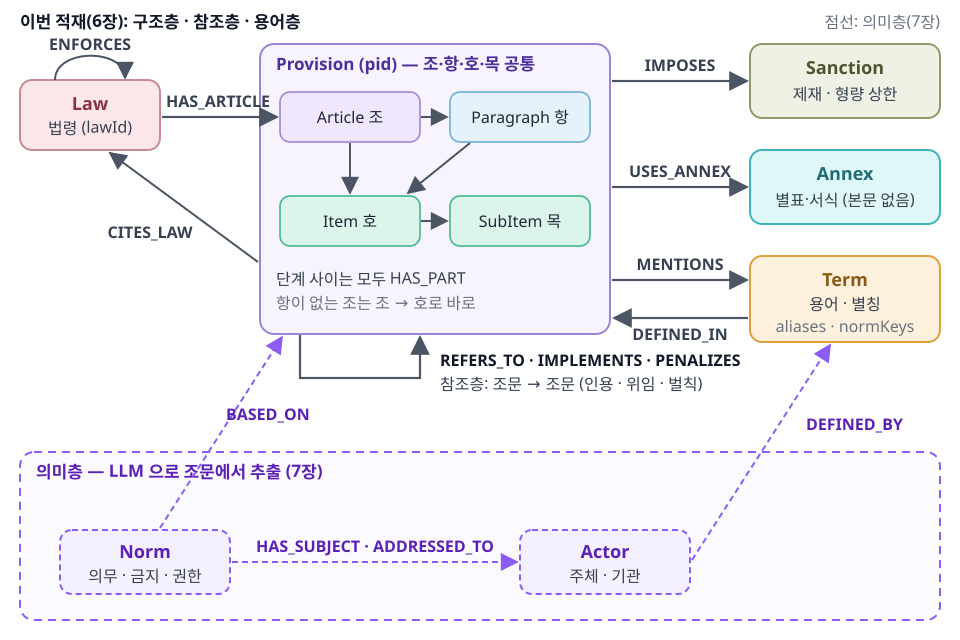

답해야 할 질문 다섯 개를 Claude Code에 주고, 법령 PDF를 직접 열어 본 뒤 노드·관계·속성을 설계하게 합니다. 사람이 설계를 검토하고 표기 차이와 수작업 문제를 고쳐 달라고 요청한 과정부터 질문별 그래프 탐색 경로, 제약·색인 파일까지 실제 기록으로 살펴봅니다.
무엇을 · 왜#
스키마(온톨로지)는 그래프의 틀입니다. 어떤 노드를 두고 무엇을 관계로 연결할지 정하므로, 같은 법령으로도 쓰임새에 따라 전혀 다른 그래프가 나옵니다. 그래서 모델부터 그리지 않고 답해야 할 질문 목록에서 출발합니다. 이 교재의 구축 목적은 「위험물 안전관리 매뉴얼 내부 구축」이고, 질문은 0장의 골든 퀘스천 5개입니다.
이 장에서는 그 질문을 Claude Code에 그대로 주고, 코드를 만들기 전에 PDF를 열어 실제 조문 형태부터 확인하게 합니다. 설계 결과는 사람이 검토하고 한 번 더 수정을 요청한 뒤 커밋합니다. 틀(스키마)을 채우는 인스턴스(지식 그래프)는 6장에서 만듭니다.
따라 하기#
- 법령 PDF 9개를 실습 폴더에 넣고 커밋합니다. 국가법령정보센터(law.go.kr)에서 받은 위험물안전관리법·화학물질관리법·폐기물관리법의 법률·시행령·시행규칙 PDF입니다. 이 기록에서는 미리 받아 둔 폴더에서 이름에 「법」이 포함된 파일만 복사했습니다.
mkdir -p pdf && cp <받아 둔 폴더>/*법*.pdf pdf/ && ls -1 pdf/ git add pdf && git commit -qm "법령 PDF 9개"파일 이름 끝의 날짜가 시행일입니다. 다운로드한 날짜에 따라 판본이 달라지면 6장의 조 개수도 달라질 수 있습니다.위험물안전관리법 시행규칙(행정안전부령)(제00628호)(20260701).pdf 위험물안전관리법 시행령(대통령령)(제36432호)(20260701).pdf 위험물안전관리법(법률)(제20231호)(20250807).pdf 폐기물관리법 시행규칙(기후에너지환경부령)(제00070호)(20261112).pdf 폐기물관리법 시행령(대통령령)(제36811호)(20261112).pdf 폐기물관리법(법률)(제21129호)(20261112).pdf 화학물질관리법 시행규칙(기후에너지환경부령)(제00001호)(20251001).pdf 화학물질관리법 시행령(대통령령)(제36744호)(20261008).pdf 화학물질관리법(법률)(제21531호)(20261008).pdf - 실습 폴더에서 Claude Code를 엽니다.
claude를 처음 실행하면 글자 테마 선택 → 보안 안내 → 폴더 신뢰 확인이 차례로 나옵니다. 폴더 신뢰 확인의 기본 선택은No, exit라서 그냥 Enter를 누르면 Claude Code가 꺼집니다. ↓ 키로Yes, I trust this folder를 고른 뒤 Enter를 누릅니다.시작 화면에는 Claude Code 버전(이 기록은 v2.1.331)과 모델·플랜이 나옵니다(이 기록은Accessing workspace: …/law-graph Quick safety check: Is this a project you created or one you trust? … ❯ No, exit Yes, I trust this folderFable 5.2 with medium effort · Claude Ultra, 사용자마다 다릅니다). 기본 권한 모드에서는 명령을 실행하거나 파일을 쓰기 전에 매번 승인을 요청합니다. - 설계를 요청합니다(P1). 구축 목적, 골든 퀘스천, 「아직 코드는 만들지 말고 PDF부터 열어 보라」는 작업 순서, 결과 파일 이름을 한 번에 전달합니다. 여러 줄을 입력할 때는 줄 끝에서
\+ Enter를 눌렀습니다.Claude는우리 회사에 「위험물 안전관리 매뉴얼」을 내부 구축하려고 해. pdf/ 폴더에 법령 PDF 9개(위험물안전관리법·화학물질관리법·폐기물관리법의 법률·시행령·시행규칙)가 있어. 이걸 Neo4j 그래프로 만들어서 아래 골든 퀘스천에 근거 조문과 함께 답하게 하고 싶어. 1. 제조소등에서 위치·구조·설비 변경 없이 저장·취급하는 위험물의 품명·수량(지정수량 배수)을 바꾸려면 언제까지 누구에게 신고해야 하는가? 2. 위험물안전관리자가 해임되거나 퇴직하면 관계인은 며칠 안에 다시 선임해야 하고, 선임한 뒤에는 어떤 절차를 밟아야 하는가? 3. 정기점검을 마친 제조소등의 관계인은 점검 결과를 언제까지 누구에게 제출해야 하는가? 4. 제조소등에서 위험물 유출 사고가 발생했을 때 관계인과 이를 발견한 사람은 각각 무엇을 해야 하며, 관계인이 응급조치를 하지 않으면 누가 명령할 수 있는가? 5. 안전관리자 선임 의무(제15조)나 정기점검 의무(제18조)를 지키지 않으면 어느 벌칙·과태료 조항이 적용되는가? 아직 코드는 만들지 말고, 먼저 PDF 를 열어 실제 조문 모양을 확인한 다음 "이 질문들에 답하려면 어떤 노드·관계·속성이 필요한가"부터 스키마(온톨로지)를 설계해 줘. 질문마다 그래프에서 어떤 경로로 답을 찾는지도 보여 줘. 결과는 schema.md(노드·관계·속성 표 + mermaid 그림)와 schema.cypher(제약·색인)로 저장하고, 골든 퀘스천은 golden-questions.md 에 그대로 적어 둬.pdftotext -layout으로 PDF의 텍스트를 추출해grep으로 조 제목·「제N조」 인용·「대통령령으로 정하는」·벌칙 문구를 훑었습니다. 이때 셸 명령 승인을 10번 요청했고, 모두 읽기만 하는 명령이라 1(Yes)을 골랐습니다. 첫 파일schema.cypher를 만들 때도 1을 골랐고, 다음 파일schema.md를 만들 때는 2(이 세션 동안 편집은 묻지 않기)를 골랐습니다. 4분 56초 뒤schema.md(405줄)·schema.cypher(86줄)·golden-questions.md가 생성됐습니다. - 설계를 읽고 고쳐 달라고 합니다(P2). 첫 설계에는 골든 퀘스천용 의무(
Norm) 14건을 손으로 적은 표까지 들어 있었습니다. 검토하면서 두 가지 문제를 발견했습니다. 질문의 낱말과 조문의 표기가 다르다는 점, 그리고 손으로 만든 14건은 다른 법으로 확장하기 어렵다는 점입니다.4분 36초 뒤schema.md 읽어 봤어. 두 가지 고쳐 줘. 1. 질문에 쓰는 말과 조문 표기가 달라. 질문은 「안전관리자」「시·도지사」「위치·구조·설비」(가운뎃점 ·)라고 쓰는데 PDF 는 「위험물안전관리자」「시ㆍ도지사」(ㆍ)「특별시장ㆍ광역시장ㆍ…ㆍ도지사」로 쓰고, 「제조소등」은 「제조소ㆍ저장소 및 취급소」야. Term·Actor 에 대표 이름, 별칭(aliases), 가운뎃점을 맞춘 정규화 이름을 두고, 정의 조항(제2조)과 「이하 "…"라 한다」 약칭에서 별칭을 채우는 규칙을 적어 줘. 질문의 낱말을 어떤 색인으로 이 노드에 연결하는지도 Q2 를 예로 보여 줘. 2. Norm 14건을 손으로 만드는 건 다른 법으로 넓히기 어려워. 이번 적재는 구조층·참조층·Term 까지만 하고, Actor·Norm(의미층)은 다음 단계에서 LLM 으로 조문에서 뽑아 붙이는 걸로 표시해 줘. 의미층 없이 다섯 질문에 어떤 경로로 답하는지도 고쳐 줘.schema.md는 501줄,schema.cypher는 106줄이 됐습니다. - 커밋합니다(P3). 「커밋해 줘」라고만 하자 Claude는 main에 바로 넣지 않고
schema-design브랜치를 새로 만들어 커밋했습니다. 이 실습은 브랜치 하나로 진행하므로 이렇게 이어서 요청했습니다.좋아, schema.md·schema.cypher·golden-questions.md 를 커밋해 줘.Claude는이 실습은 main 하나로 할게. main 으로 합치고 앞으로도 main 에 커밋해 줘.git merge --ff-only로 합치고 브랜치를 지웠습니다. 이어서 「main에 바로 커밋」이라는 메모를 자동 메모리에 남기고, 실습 폴더 밖(~/.claude/projects/…/memory/MEMORY.md)에 색인 줄을 추가하는 명령의 승인을 요청했습니다. 경로가 실습 폴더 밖이라 3(No)으로 거절하고 「메모리 파일은 건드리지 말고 넘어가자. 실습 폴더 밖은 고치지 마.」라고 답했습니다. 승인 창에서는 명령의 경로를 확인하고 선택하세요.
확인#
세 파일이 main에 반영됐는지 확인합니다. 커밋 번호와 메시지는 사용자마다 다릅니다(아래는 이 실습의 기록이며, 첫 커밋 줄은 생략했습니다).
ls schema.md schema.cypher golden-questions.md
git log --oneline
27726ff 법령 그래프 스키마 설계와 골든 퀘스천 5개
d08ed21 법령 PDF 9개
…
schema.md를 열어 노드·관계 표와 「질문별 탐색 경로」 절이 있는지, golden-questions.md에 다섯 질문이 그대로 있는지 확인합니다. 아래에서 그 내용을 살펴봅니다.
Claude가 낸 설계#
모델이 작성하는 설계와 문장은 실행할 때마다 달라질 수 있습니다. 아래는 P2까지 반영해 커밋한 설계입니다.
네 층#
| 층 | 내용 | 만드는 방법 | 단계 |
|---|---|---|---|
| 구조층 | 법령·조·항·호·목, 별표·서식의 기본 틀 | 규칙(글자 그대로 분리) | 이번 적재(6장) |
| 참조층 | 인용·위임·처벌 관계, 형량(Sanction) |
규칙(「제N조제M항」 표기, 형량 문구) | 이번 적재(6장) |
| 용어층 | Term과 별칭, 조문 ↔ 용어 연결 |
규칙(정의·약칭 문형) | 이번 적재(6장) |
| 의미층 | Norm(의무·권한), Actor(주체) |
LLM이 조문에서 추출 | 다음 단계(7장) |

노드#
| 노드(레이블) | 키 | 주요 속성 |
|---|---|---|
Law |
lawId(법령 이름) |
family(법·시행령·시행규칙 묶음), lawType, lawNumber, effectiveOn, inCorpus, aliases(「법」「영」) |
Provision + Article/Paragraph/Item/SubItem |
pid(예: 위험물안전관리법:제15조:제2항) |
level(조/항/호/목), citation(답변에 표시하는 표기), articleNo·articleSub(제34조의2), title(조), text(원문), normText(정규화한 텍스트), chapter·chapterTitle(장은 속성), status(현행/삭제), isCurrent·effectiveFrom(시행 예정 판본), page, order |
Annex |
annexId |
kind(별표/서식), number, inCorpus=false(본문이 PDF에 없음) |
Sanction |
sanctionId |
type(징역·벌금/벌금/과태료), text, maxFineWon, maxPrisonMonths |
Term |
termId(묶음:대표 이름) |
name(대표 이름), aliases(별칭), members(구성원), definition, kind(정의/약칭/괄호정의), normName, normKeys, searchText |
관계#
| 관계 | 방향 | 뜻 |
|---|---|---|
ENFORCES |
Law → Law | 시행령·시행규칙이 모법을 시행 |
HAS_ARTICLE |
Law → Article | 법령의 조 |
HAS_PART |
Provision → Provision | 조→항→호→목. 항이 없으면 조→호 |
REFERS_TO {kind, raw} |
Provision → Provision | 조문 인용(인용·준용·예외·양벌). 법령을 넘나듦 |
IMPLEMENTS {kind, raw} |
Provision → Provision | 하위법령 조문이 「법 제N조…에 따라」로 상위 조항을 받음(위임정의·절차·권한위임) |
PENALIZES {raw} |
Provision → Provision | 벌칙·과태료 호가 지목한 위반 조항 |
IMPOSES |
Provision → Sanction | 형량 문구가 있는 조·항 |
USES_ANNEX |
Provision → Annex | 별표·서식 언급 |
CITES_LAW {raw} |
Provision → Law | 조 번호 없는 법령 인용, 묶음 밖 법령 |
DEFINED_IN |
Term → Provision | 정의·약칭이 있는 조문 |
MENTIONS |
Provision → Term | 조문에 용어(대표 이름·별칭)가 나옴 |
PDF를 열어 보고 바뀐 것#
P1에서 「먼저 PDF를 열어 보라」고 요청한 덕분에 Claude가 스스로 찾아 설계에 반영한 주의 사항입니다(schema.md 1절).
| PDF에서 본 것 | 예 | 설계 |
|---|---|---|
| 항 없이 호가 바로 붙는 조 | 법 제35조·제36조 | 호의 부모는 조 또는 항(HAS_PART 하나로) |
| 가지번호 | 제34조의2, 호 7의2. |
articleSub, 호 번호는 문자열 |
| 벌칙 호가 위반 조항을 직접 지목 | 제36조제6호 「제15조제1항 또는 제2항의 규정을 위반하여…」 | PENALIZES |
| 법은 「시ㆍ도지사」라 쓰지만 시행령이 소방서장에게 위임 | 시행령 제21조제2호·제11호 | IMPLEMENTS {kind:'권한위임'} |
| 정의가 제2조 밖에도 있음 | 「안전관리자」는 제15조제1항 약칭, 「관계인」은 제11조 괄호 | Term(kind=약칭·괄호정의) |
| 별표·서식은 이름만 있고 본문이 없음 | 시행령 별표 9(과태료 부과기준), 별지 제19호서식 | Annex의 기본 틀(inCorpus=false) |
| 같은 조 번호가 두 번 | 폐기물관리법 제68조 [시행일: 2027. 1. 8.], 부칙 제1조 |
pid에 판본 꼬리표, 부칙은 적재하지 않음 |
| 쪽 머리말이 본문에 끼어듦 | 「법제처 4 국가법령정보센터」가 제15조 중간에 | 적재 때 제거, page만 보존 |
골든 퀘스천마다 어느 경로로 답하나#
모든 질문은 같은 두 단계를 거칩니다. 진입: 질문의 낱말로 조문을 찾습니다(용어 열쇠 + 전문 색인, 조 번호가 있으면 바로). 펼치기: 찾은 조문이 속한 조 전체를 가져오고, 하위법령(IMPLEMENTS)·서식(USES_ANNEX)·조 안 인용(REFERS_TO)·벌칙(PENALIZES → IMPOSES)을 따라갑니다. 기한과 상대방은 그래프의 값이 아니라 조회된 조문에서 LLM이 읽어 냅니다.
| 질문 | 진입 | 펼치기에서 도달하는 조문 |
|---|---|---|
| Q1 품명·수량 변경신고 | 법 제6조제2항 | ← IMPLEMENTS{권한위임} 시행령 제21조제2호 · ← IMPLEMENTS{절차} 시행규칙 제10조 → 별지 제19호서식 · ← REFERS_TO{예외} 제6조제3항 · ← PENALIZES 제39조제1항제3호 → 과태료 |
| Q2 안전관리자 재선임·절차 | 법 제15조제2항 | ← REFERS_TO 제15조제3항 ← IMPLEMENTS{절차} 시행규칙 제53조 → 별지 제32호서식 · 제15조제5항 ← 시행규칙 제54조 · ← PENALIZES 제36조제6호, 제39조제1항제5호 |
| Q3 정기점검 결과 제출 | 법 제18조제2항 | ← IMPLEMENTS{권한위임} 시행령 제21조제11호 · → 제18조제1항 ← 시행령 제16조, 시행규칙 제64조 · ← PENALIZES 제39조제1항제7호의2 |
| Q4 유출 사고 응급조치·통보·명령 | 법 제27조제1항 | 제27조 전체(②③이 ①을 REFERS_TO) · ← PENALIZES 제36조제15호 → 벌금 |
| Q5 제15조·제18조 위반 제재 | 조 번호로 바로 | 각 항 ← PENALIZES 벌칙 호 → 상위 조·항 IMPOSES Sanction (양벌규정은 REFERS_TO{kind:'양벌'}) |
설계 당시에는 데이터가 없어 이 경로를 실행해 보지 못했고, 6장에서 적재한 뒤 Q1~Q4의 진입 조문이 최상위에 나오고 Q5의 벌칙 10건이 기대 답과 일치하는 것을 확인했습니다. Q2의 진입 질의는 다음과 같습니다(schema.md 7절).
// 질문 안에 Term 의 열쇠(정규화한 대표 이름·별칭)가 들어 있나
MATCH (t:Term {family: '위험물안전관리법'})
WHERE any(k IN t.normKeys WHERE $qKey CONTAINS k)
RETURN t.termId, t.name, [k IN t.normKeys WHERE $qKey CONTAINS k] AS 맞은_열쇠;
질문의 「위험물안전관리자」는 Term 「안전관리자」의 별칭 열쇠로, 「관계인」은 대표 이름으로 잡힙니다. 이 연결이 실제로 어떻게 동작하는지는 7장과 9장에서 살펴봅니다.
P2로 바뀐 것#
| 첫 설계(P1) | 고친 설계(P2) | |
|---|---|---|
| 의미층 | Norm 14건을 손으로 적은 표, Actor, DELEGATED_TO·SANCTIONED_BY 등 |
다음 단계(LLM 추출)로 미루고 입력·출력과 자동 검증 조건만 적음 |
| 권한 위임 | DELEGATED_TO(Norm → Actor) |
IMPLEMENTS {kind:'권한위임'}(시행령 조문 → 법 조항) — 조 제목이 「권한의 위임」이면 규칙으로 붙일 수 있음 |
| 표기 차이 | Term(정의·약칭) |
대표 이름·별칭·구성원·정규화 이름·열쇠, 가운뎃점 7종을 ·로 맞추는 정규화 규칙, 별칭 채우는 문형 4가지, MENTIONS |
| 전문 색인 | 조문 원문 text, 용어 name·definition |
정규화한 조문 텍스트 normText, 용어 searchText |
Claude는 「제조소」를 「제조소등」의 별칭이 아닌 구성원(members)으로 따로 두었습니다. 별칭과 섞으면 답변에서 둘을 같은 것으로 취급하기 때문이라고 설명했습니다.
schema.cypher#
제약과 색인을 모아 둔 파일입니다. 6장의 ingest.py가 적재 전에 이 파일을 읽어 실행합니다. 여러 번 실행할 수 있도록 모두 IF NOT EXISTS를 사용합니다.
| 종류 | 이름 |
|---|---|
| 유일 제약 5개 | law_id, provision_pid, annex_id, sanction_id, term_id |
| 범위 색인 8개 | term_family, term_norm_name, provision_law_article, provision_level, provision_current, provision_citation, law_family, sanction_type |
전문 색인 2개(cjk) |
provision_text(조 제목·정규화한 텍스트), term_text(용어 searchText) |
| 주석으로 둔 것 | 의미층(Norm·Actor) 제약과 색인, 벡터 색인 |
// 조·항·호·목은 모두 :Provision 라벨을 함께 갖는다(:Article / :Paragraph / :Item / :SubItem).
CREATE CONSTRAINT provision_pid IF NOT EXISTS
FOR (p:Provision) REQUIRE p.pid IS UNIQUE;
// "제15조" 처럼 조 번호로 바로 찾기
CREATE INDEX provision_law_article IF NOT EXISTS
FOR (p:Provision) ON (p.lawId, p.articleNo, p.articleSub);
// 한국어는 기본 분석기로 잘 쪼개지지 않으므로 cjk(2글자 단위) 분석기를 쓴다.
CREATE FULLTEXT INDEX provision_text IF NOT EXISTS
FOR (p:Provision) ON EACH [p.title, p.normText]
OPTIONS { indexConfig: { `fulltext.analyzer`: 'cjk' } };
(파일에서 발췌했습니다. 주석은 Claude가 쓴 그대로입니다.) 4장에서 손으로 해 본 cjk 분석기를 Claude도 스스로 골랐습니다.
교재 pptx의 설계와 다른 점#
이 교재의 출발점인 PBL 특강 교재(Ch.4)는 사람이 arrows.app으로 노드 9종(법령·장·조·항·호·소관부처·하위법령·기업·인허가증)과 관계 10종을 그려 Claude에 주었습니다. 이번에는 Claude Code가 골든 퀘스천을 바탕으로 설계했으며, 다음과 같은 차이가 있습니다.
| 항목 | PBL 특강 교재(arrows.app) | 이 교재 | 왜 |
|---|---|---|---|
| 장 | Chapter 노드 + HAS_CHAPTER |
chapter·chapterTitle 속성 |
다섯 질문의 경로 어디에도 장을 거치는 단계가 없습니다. 장은 찾은 조와 함께 보여 줄 정보이므로 속성이면 충분합니다 |
| 위임 | DELEGATES_TO(위임하는 쪽 → 하위법령) |
IMPLEMENTS(하위법령 조문 → 상위 조항), 방향이 반대 |
하위법령 조문이 「법 제N조제M항에 따라」라고 상위 조항을 직접 적으므로, 해당 조문에서 규칙을 적용해 항 단위로 추출할 수 있습니다 |
| 벌칙 | 벌칙 조문 → 근거 조문 REFERS_TO(조 단위) |
PENALIZES(벌칙 호 → 위반 항) + IMPOSES → Sanction |
Q5가 「어느 벌칙 호가 어느 의무에」를 묻고, 형량 상한을 값으로 꺼내야 합니다 |
| 용어 | 없음 | Term(별칭·정규화 열쇠) + MENTIONS |
질문의 낱말(「위험물안전관리자」「시·도지사」)과 조문 표기가 다릅니다(P2) |
| 인허가증 | Company·Permit + BASED_ON |
없음 | 이번 구축 목적(내부 매뉴얼)에는 회사·인허가증이 나오지 않습니다 |
| 범위 | 위험물안전관리법 1개 | 법령 9개 | 세 법과 하위법령이 서로 인용합니다 |
막히면
claude를 실행했는데 바로 꺼집니다
- 증상: 처음
claude를 실행하면 「Accessing workspace … Is this a project you created or one you trust?」에서 기본 선택이❯ No, exit입니다. 그냥 Enter를 누르면 Claude Code가 꺼집니다. - 원인: Claude Code 2.1.x의 폴더 신뢰 확인 화면 기본값입니다.
- 조치: ↓ 키로
Yes, I trust this folder를 고른 뒤 Enter를 누르세요.
커밋을 요청했더니 실습 폴더 밖 파일을 수정해도 되는지 묻습니다
- 증상: 「main에 커밋해 줘」라고 하자
Wrote 1 memory로~/.claude/projects/-Users-…-lab-law-graph/memory/commit-directly-on-main.md를 만들고, 이어서MEMORY.md색인에 줄을 추가하는 Bash를 승인해 달라고 합니다(경로가 실습 폴더 밖). - 원인: Claude Code의 자동 메모리(auto memory) 기능이 사용자 지시를 다음 세션용 메모로 남깁니다. 메모 파일 작성에는 승인을 요청하지 않고, 색인을 추가하는 Bash에만 승인을 요청했습니다.
- 조치: 권한 요청에서 3(No) → 「메모리 파일은 건드리지 말고 넘어가자. 실습 폴더 밖은 고치지 마.」 메모를 아예 끄려면
/memory또는 설정에서 자동 메모리를 끕니다. 남은 메모 파일 하나는 실습 결과에 영향이 없었습니다.
확인 문제#
설계를 요청하면서 「아직 코드는 만들지 말고 먼저 PDF를 열어 보라」고 한 까닭은 무엇인가요?
실제 조문 형태에 따라 스키마가 달라지기 때문입니다. Claude는 PDF를 보고 항 없이 호가 붙는 조, 가지번호, 벌칙 호가 위반 조항을 직접 지목하는 문장, 같은 조 번호가 두 번 나오는 시행 예정 판본, 본문에 끼어든 쪽 머리말을 찾아 설계에 반영했습니다. 코드를 먼저 짰다면 적재한 뒤에야 알았을 것들입니다.
Term의 aliases와 members는 어떻게 다른가요?
aliases(별칭)는 같은 것을 가리키는 다른 표현입니다. 예를 들어 「안전관리자」의 별칭은 「위험물안전관리자」입니다. members(구성원)는 그 말에 속하는 것들입니다. 「제조소등」의 구성원은 제조소·저장소·취급소이며, 「제조소」가 곧 「제조소등」은 아닙니다. 둘을 섞으면 답변에서 서로 다른 것을 같은 것으로 취급하게 됩니다.
첫 설계의 Norm 14건을 지우고 의미층을 다음 단계로 미룬 이유는 무엇인가요?
손으로 적은 14건은 골든 퀘스천 다섯 개에만 맞춘 것이라 화학물질관리법·폐기물관리법이나 새 질문으로 확장할 수 없습니다. 구조층·참조층·용어층만으로도 다섯 질문 모두 근거 조문에 도달할 수 있으므로, 의미층은 LLM으로 조문에서 정보를 추출해 연결하는 방법(7장)으로 만들기로 했습니다.
IMPLEMENTS 관계의 화살표는 어느 쪽을 가리키나요?
하위법령 조문에서 상위 조항을 가리킵니다. 예를 들어 시행규칙 제53조 → 법 제15조제3항입니다. 하위법령 조문이 「법 제15조제3항에 따라」처럼 상위 조항을 적기 때문에 해당 조문에서 이 방향으로 관계를 추출합니다. PBL 특강 교재의 DELEGATES_TO와는 방향이 반대입니다.